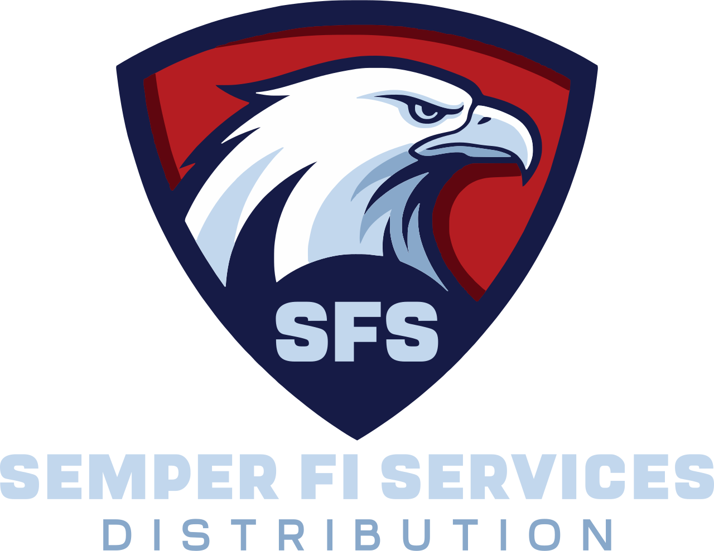

Fort Stewart Barracks Repair
Quality Control Manager role supporting barracks repair with USACE-facing correspondence, inspections, Daily QC Reports, submittals, RFIs, DFOW tracking, and implementation of the Three-Phase Quality Control System.
Government
Semper Fi Services supports DLA-focused supply execution through controlled sourcing, supplier coordination, documentation verification, packaging, and delivery. Our model is built to manage inspection readiness, QAR / DCMA coordination, production lot testing, and contract-compliant execution while drawing on experience from military aviation quality assurance and large federal project environments.
Past Performance
The experience behind Semper Fi Services includes direct responsibility for inspections, documentation, quality control, schedule coordination, and controlled execution on military, federal, and large public-sector work. That background supports our ability to manage the discipline required for DLA supply contracts, including supplier readiness, inspection coordination, and documentation accuracy.
Quality Control Manager role supporting barracks repair with USACE-facing correspondence, inspections, Daily QC Reports, submittals, RFIs, DFOW tracking, and implementation of the Three-Phase Quality Control System.
Superintendent / Lift Director experience supporting bridge girders, concrete pilings, concrete testing, cofferdam operations, crane and rigging safety, inspection support, and documented compliance during demolition and new work.
Oversight of lifting operations, structural steel placement coordination, concrete inspection support, safety controls, access zones, and material handling planning in an occupied high-traffic downtown environment.
Superintendent / SSHO / QCM support for facility repair, roofing and siding inspection, electrical and interior/exterior scopes, documentation turnover, subcontractor accountability, and safe execution on active facilities.
Superintendent / Lift Director experience involving barges, cranes, concrete operations, structural updates, crew supervision, and controlled execution in a high-risk infrastructure setting.
Experience supporting critical lifts, crane assembly, structural steel and concrete placement, post-erection inspections, safety systems, and quality oversight on major commercial and public-sector projects.
Execution Readiness
Semper Fi Services is structured to support the realities of DLA supply execution, where award is only the beginning. Success depends on supplier readiness, accurate documentation, coordinated inspection support, and controlled release of compliant material.
We are building our operation around the execution requirements commonly seen in DLA procurement, including traceability, packaging, documentation control, delivery discipline, and accurate flowdown of contract requirements to suppliers.
When source inspection is required, supplier readiness becomes critical. Our role is to coordinate with suppliers so documentation, product status, and execution conditions are aligned for government inspection at the source before release.
When contracts require production lot testing, we support the coordination of sampling, test documentation, lab interaction, and record control so material is not released until requirements are satisfied.
We want manufacturers to view Semper Fi Services as a serious execution partner, not just another source of quote requests. Our role is to communicate requirements clearly, manage documentation correctly, and help ensure the supplier is prepared for inspection and delivery.
Our experience in military aviation quality assurance and large federal project environments has been built around documentation, accountability, inspection support, and controlled execution under demanding conditions.
Our internal systems are being developed in alignment with ISO 9001 and AS9120 principles so that supplier control, traceability, document control, and release processes are structured for long-term audit readiness and higher-level contract performance.
Relevant Experience
These experience areas support credibility with government buyers, DCMA / QAR stakeholders, prime contractors, and manufacturers who need confidence in inspection readiness, documentation discipline, and controlled execution.
Marine Corps aviation background with airworthiness documentation, inspections, technical publication use, torque witnessing, and maintenance quality assurance responsibilities.
Experience as Quality Control Manager / Superintendent / SSHO supporting federal documentation, inspections, submittals, RFIs, turnover, and contract-aligned field execution.
Background supporting projects from $1M repairs to $400M high-rise and major infrastructure work, including crane operations, safety oversight, rigging, and quality inspections.
Resume-backed certifications and roles relevant to controlled execution, including CQM-C, CHST, EM-385, OSHA 30, crane/rigging credentials, and safety program leadership.
Experience performing or overseeing inspections, discrepancy tracking, documentation review, maintenance records, daily reporting, and quality turnover expectations.
Leadership history involving supervision of crews, tasking of personnel, schedule support, quality management, and controlled execution in demanding military and construction environments.
Leadership Background
Semper Fi Services is supported by two complementary backgrounds: one rooted in military aviation quality assurance, traceability, and documentation control, and one rooted in field leadership, supplier coordination, safety, inspections, and large federal project execution.
Military Aviation QA / Documentation Discipline
David brings 9 years of U.S. Marine Corps aviation experience, including 5 years as a collateral-duty Quality Assurance Representative, FAA A&P certification, technical publication use, maintenance records control, inspection support, and engineering directive familiarity.
His background supports the company’s internal focus on traceability, documentation accuracy, production lot testing coordination, packaging control, and release discipline.
Federal QC / Safety / Field Execution Leadership
Thomas brings USACE / NAVFAC quality control experience, superintendent and SSHO leadership, inspection coordination, subcontractor management, and direct experience on military, public-sector, and major infrastructure projects.
His background supports the company’s external execution role, including supplier relationships, field coordination, accountability, and helping manufacturers prepare for inspection and contract requirements at the source.
Mission
Government supply execution demands professionalism, inspection readiness, documentation discipline, and reliable coordination between contractor, supplier, and government stakeholders. Our goal is to bring those standards into every opportunity we pursue while continuing to build toward ISO 9001 and AS9120-aligned operational maturity.
Structured execution. Clear documentation. Mission-first accountability.
That is the standard we want government customers and partners to associate with Semper Fi Services.
